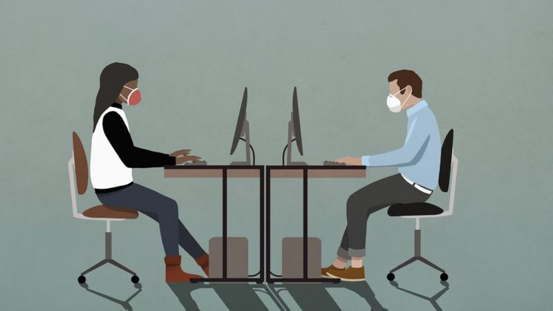
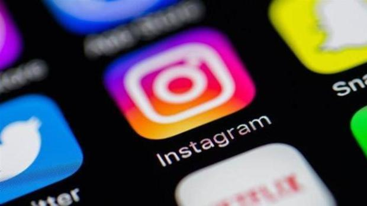

¿Es la oficina, tal y como la conocíamos hasta ahora, una reliquia del pasado?
David Mott, un inversor de capital emprendedor se hace esa pregunta mientras reflexiona sobre la
pandemia. Cree que el nuevo coronavirus nos ha brindado una "enorme oportunidad para un cambio
histórico real" y para "reinventar el concepto de oficina".
Mott, socio fundador de Oxford Capital, una firma de inversiones inmobiliarias en Londres, Reino
Unido, dice que en muchas de sus reuniones de los últimos meses ha debatido con su equipo sobre cómo
serán los espacios de trabajo de aquí en adelante.
"Y no solo mi empresa, sino muchos de nuestros clientes -empresas de todo tipo, dentro y fuera de
Reino Unido- se plantean cuál es el futuro del trabajo", le cuenta a BBC Mundo.

Si tiene más de 30 años, seguramente recuerde perfectamente cómo era el mundo
antes de que las redes sociales comenzasen a transformarlo irremediablemente. A comienzos del siglo
XXI, algo antes de la aparición de Facebook, seguíamos empleando las cabinas de teléfono y el correo
tradicional para mantener el contacto con familia y amigos. Ahora, gracias a servicios como
Instagram, que acaba de cumplir 10 años de existencia, es posible compartir imágenes, vídeos y
mensajes con cualquiera. Independientemente del país donde se encuentre y de la hora que sea.
Regular, intervenir o dejar pasar. El debate de las redes sociales es pegajoso
como la plastilina barata. ¿Qué hacer para reducir la desinformación? Y el camino es empedrado.
Porque si meten la mano pueden atentar contra la libertad de expresión. Odiar no es delito. Pero si
no hacen tampoco nada pueden convertirse en un guirigai de narices. Los usuarios de Twitter, en
cambio, han sabido contener a los «bots» que inundan de mensajes de antivacunas.
Big Data, AI y Machine Learning permiten grandes procesamientos de datos en
tiempo real, favoreciendo a las tecnologías financieras y habilitando ventajas competitivas sin
precedentes en los negocios
El crecimiento y la explosión de datos de los últimos años se debe a los múltiples avances
tecnológicos: La adopción de la Nube; Tecnologías móviles; Aplicaciones, Dispositivos portátiles,
Redes inteligentes e IoT; son sólo algunos de los factores que explicarían el crecimiento de los
datos globales en los últimos años. En este contexto, el análisis de estos datos es fundamental para
generar ventajas competitivas.